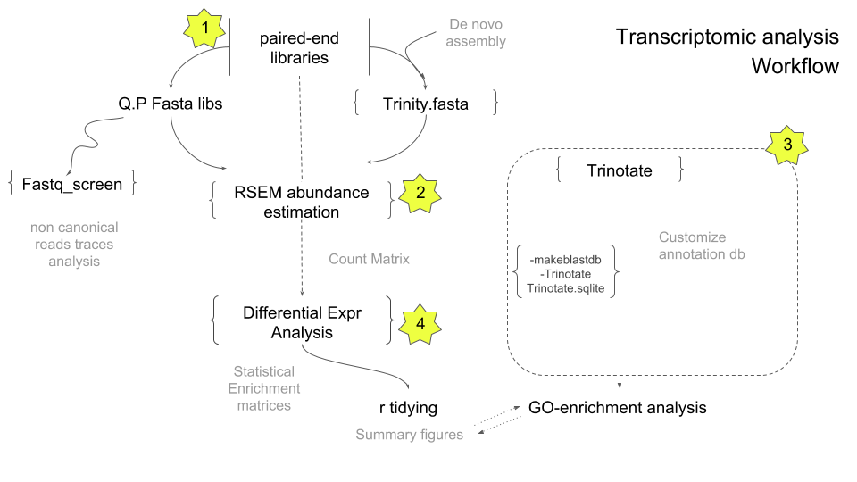

NGS protocols to wrangling Transcriptomics.
De novo transcriptome assembly is the de novo sequence assembly method of creating a transcriptome without the aid of a reference genome (wikipedia). The availability of Next Generation Sequencing (NGS) technologies allows researchers to capture the spatial or temporal profile of gene expresion from a huge types of biological samples. The Following markdown describe an integrative workflow analysis in RNA-seq data based on the current bioinformatic methods.
-Ricardo Gore
Text can be bold, italic, or strikethrough.
There should be whitespace between paragraphs.

Starts working on ssh serve
ssh user@omica
Password: ******
The Center for Scientific Research and Higher Education of Ensenada (CICESE), Mexico have a computer cluster (Paper) with many bioinformatic apps installed within ready to implement by subscribed users.
Please, email PhD A. Lago in order to request a cluster account (a prior authorization from your responsal)